Setting up the IMU¶
Created: February 18, 2025 8:20 PM Owner: Geoff McIntyre
Are you skipping ahead?
Make sure you have already installed the custom tinyCore board library and setup your Arduino IDE using the previous tutorial!
In this tutorial, we will walk through how to use the built-in IMU on the tinyCore V2.0, using the Arduino IDE. At this point, you should have already installed the custom board library and tested flashing code with an example program (e.g. Blink).
1. Install the libraries¶
The IMU used on the chip is the LSM6DSOX, which Adafruit already made a wonderful library for: Adafruit_LSM6DS
You can either install it manually, or click on the Library Manager icon in Arduino IDE:
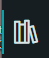
Then search “Adafruit_LSM6DS” and click INSTALL
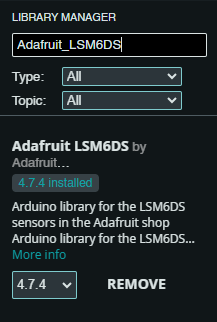
FOR LEGACY (iotaCore) BOARDS ONLY:
Legacy boards (labeled "iotaCore" on the back silkscreen) utilize an older LSM6DS3TRC IMU chip. These chips were manufactured with an I2C error, appearing at address 0x69 (instead of the 0x6A that Adafruit LSM6DS3 sensors normally use). To account for this, you will need to install our custom IMU library.
After installing the Adafruit Library from the previous step, navigate to the folder it installed to. Usually this can be found in Documents → Arduino → libraries → Adafruit LSM6DS
Now, Download our custom tinyCore IMU libraries, and add them into this directory.
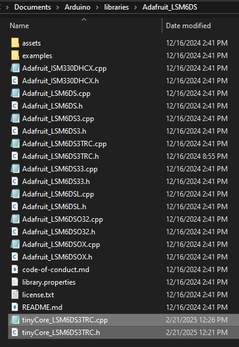
2. Open the Arduino Example¶
Our IMU example demonstrates how to initialize the IMU and view it’s data graphed out via the Serial Plotter in Arduino. To try it out, download or copy the example program below:
#include <Adafruit_LSM6DSOX.h>
Adafruit_LSM6DSOX lsm6dsox;
unsigned long lastSampleTime = 0;
const unsigned long SAMPLE_INTERVAL = 25; // Sample every 25ms
void setup() {
Serial.begin(115200);
/* while (!Serial) {
delay(10);
}*/
// Initialize IMU-related pins
pinMode(6, OUTPUT);
digitalWrite(6, HIGH);
// Initialize I2C
Wire.begin(3, 4);
delay(100);
Serial.println("Scanning for I2C devices...");
for (byte address = 1; address < 127; address++) {
Wire.beginTransmission(address);
byte error = Wire.endTransmission();
if (error == 0) {
Serial.print("I2C device found at address 0x");
if (address < 16) {
Serial.print("0");
}
Serial.println(address, HEX);
// If this is our LSM6DSOX address, try reading WHO_AM_I register
if (address == 0x6A || address == 0x6B) {
Wire.beginTransmission(address);
Wire.write(0x0F); // WHO_AM_I register address
Wire.endTransmission(false);
Wire.requestFrom(address, 1);
if (Wire.available()) {
byte whoAmI = Wire.read();
Serial.print("WHO_AM_I register value: 0x");
Serial.println(whoAmI, HEX);
// Should be 0x6C for LSM6DSOX
}
}
}
}
Serial.println("Attempting to initialize LSM6DSOX...");
if (!lsm6dsox.begin_I2C()) {
Serial.println("Failed to find LSM6DSOX chip");
Serial.println("Check your wiring!");
while (1) {
delay(10);
}
}
Serial.println("LSM6DSOX Found!");
// Configure IMU settings
lsm6dsox.setAccelRange(LSM6DS_ACCEL_RANGE_2_G);
lsm6dsox.setGyroRange(LSM6DS_GYRO_RANGE_250_DPS);
lsm6dsox.setAccelDataRate(LSM6DS_RATE_104_HZ);
lsm6dsox.setGyroDataRate(LSM6DS_RATE_104_HZ);
// Print labels for Serial Plotter
Serial.println("AccelX:AccelY:AccelZ:GyroX:GyroY:GyroZ:Temp");
}
void sampleIMUData() {
sensors_event_t accel;
sensors_event_t gyro;
sensors_event_t temp;
lsm6dsox.getEvent(&accel, &gyro, &temp);
// Format data for serial plotter (label:value:label:value format)
Serial.print("AccelX:");
Serial.print(accel.acceleration.x);
Serial.print(",");
Serial.print("AccelY:");
Serial.print(accel.acceleration.y);
Serial.print(",");
Serial.print("AccelZ:");
Serial.print(accel.acceleration.z);
Serial.print(",");
Serial.print("GyroX:");
Serial.print(gyro.gyro.x);
Serial.print(",");
Serial.print("GyroY:");
Serial.print(gyro.gyro.y);
Serial.print(",");
Serial.print("GyroZ:");
Serial.print(gyro.gyro.z);
Serial.print(",");
Serial.println(temp.temperature);
}
void loop() {
unsigned long currentTime = millis();
// Sample data at specified interval
if (currentTime - lastSampleTime >= SAMPLE_INTERVAL) {
sampleIMUData();
lastSampleTime = currentTime;
}
}
#include <tinyCore_LSM6DS3TRC.h>
tinyCore_LSM6DS3TRC lsm6ds3trc;
unsigned long lastSampleTime = 0;
const unsigned long SAMPLE_INTERVAL = 25; // Sample every 25ms
void setup() {
Serial.begin(115200);
/* while (!Serial) {
delay(10);
}*/
// Initialize IMU-related pins
pinMode(6, OUTPUT);
digitalWrite(6, HIGH);
// Initialize I2C
Wire.begin(3, 4);
delay(100);
Serial.println("Scanning for I2C devices...");
for (byte address = 1; address < 127; address++) {
Wire.beginTransmission(address);
byte error = Wire.endTransmission();
if (error == 0) {
Serial.print("I2C device found at address 0x");
if (address < 16) {
Serial.print("0");
}
Serial.println(address, HEX);
// If this is our LSM6DS3TR-C address, try reading WHO_AM_I register
if (address == 0x6A) {
Wire.beginTransmission(0x6A);
Wire.write(0x0F); // WHO_AM_I register address
Wire.endTransmission(false);
Wire.requestFrom(0x6A, 1);
if (Wire.available()) {
byte whoAmI = Wire.read();
Serial.print("WHO_AM_I register value: 0x");
Serial.println(whoAmI, HEX);
// Should be 0x6A for LSM6DS3TR-C
}
}
}
}
Serial.println("Attempting to initialize LSM6DS3TR-C...");
if (!lsm6ds3trc.begin_I2C()) {
Serial.println("Failed to find LSM6DS3TR-C chip");
Serial.println("Check your wiring!");
while (1) {
delay(10);
}
}
Serial.println("LSM6DS3TR-C Found!");
// Configure IMU settings
lsm6ds3trc.setAccelRange(LSM6DS_ACCEL_RANGE_2_G);
lsm6ds3trc.setGyroRange(LSM6DS_GYRO_RANGE_250_DPS);
lsm6ds3trc.setAccelDataRate(LSM6DS_RATE_104_HZ);
lsm6ds3trc.setGyroDataRate(LSM6DS_RATE_104_HZ);
// Print labels for Serial Plotter
Serial.println("AccelX:AccelY:AccelZ:GyroX:GyroY:GyroZ:Temp");
}
void sampleIMUData() {
sensors_event_t accel;
sensors_event_t gyro;
sensors_event_t temp;
lsm6ds3trc.getEvent(&accel, &gyro, &temp);
// Format data for serial plotter (label:value:label:value format)
Serial.print("AccelX:");
Serial.print(accel.acceleration.x);
Serial.print(",");
Serial.print("AccelY:");
Serial.print(accel.acceleration.y);
Serial.print(",");
Serial.print("AccelZ:");
Serial.print(accel.acceleration.z);
Serial.print(",");
Serial.print("GyroX:");
Serial.print(gyro.gyro.x);
Serial.print(",");
Serial.print("GyroY:");
Serial.print(gyro.gyro.y);
Serial.print(",");
Serial.print("GyroZ:");
Serial.print(gyro.gyro.z);
Serial.print(",");
Serial.println(temp.temperature);
}
void loop() {
unsigned long currentTime = millis();
// Sample data at specified interval
if (currentTime - lastSampleTime >= SAMPLE_INTERVAL) {
sampleIMUData();
lastSampleTime = currentTime;
}
}
3. Flash the tinyCore¶
Once you have the program opened in the Arduino IDE, and have connected your tinyCore via USB, it’s time to flash.
First, click the Board dropdown and “Select other board and port…”
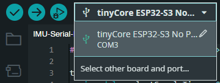
Select the correct board and COM Port of the device. Click OK
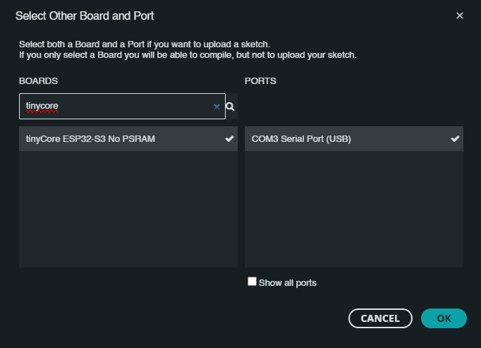
Now click the Upload icon, and wait for the board to reboot.
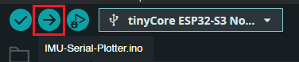
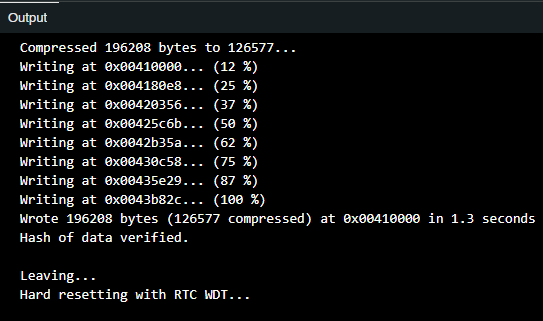
4. Open the Serial Plotter¶
The board should now be running the plotting program. Click the Serial Plotter icon in the top right corner of the IDE.
Ensure that you are set to the 115200 baud bitrate (located in the bottom right corner of the IDE)
You should now see several lines on the screen, color-coded and labeled with their variable type:
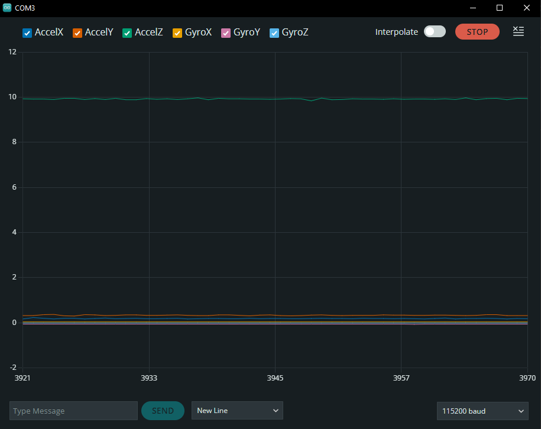
If your tinyCore is sitting up-right on a flat surface, you should see the third line (AccelZ) hovering around 9.81m/s. This is the acceleration due to gravity!
Now, if you start shaking the device, you will also see it’s movements, both accelerations and rotational movement in all six axes!
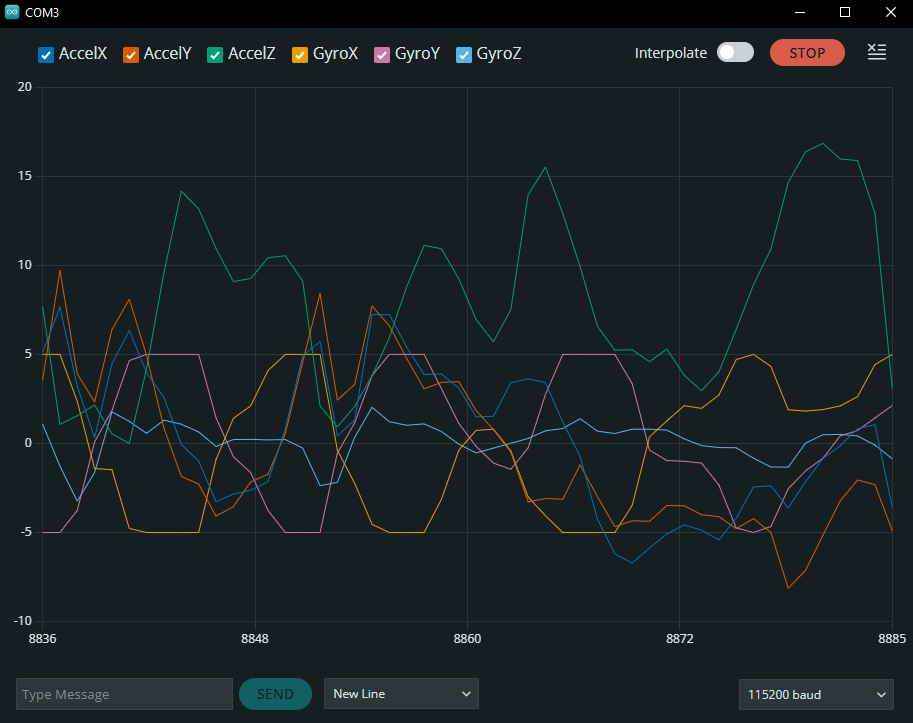
Try drawing circles in the air in different orientations, and see what shapes you can measure! Here’s my result:
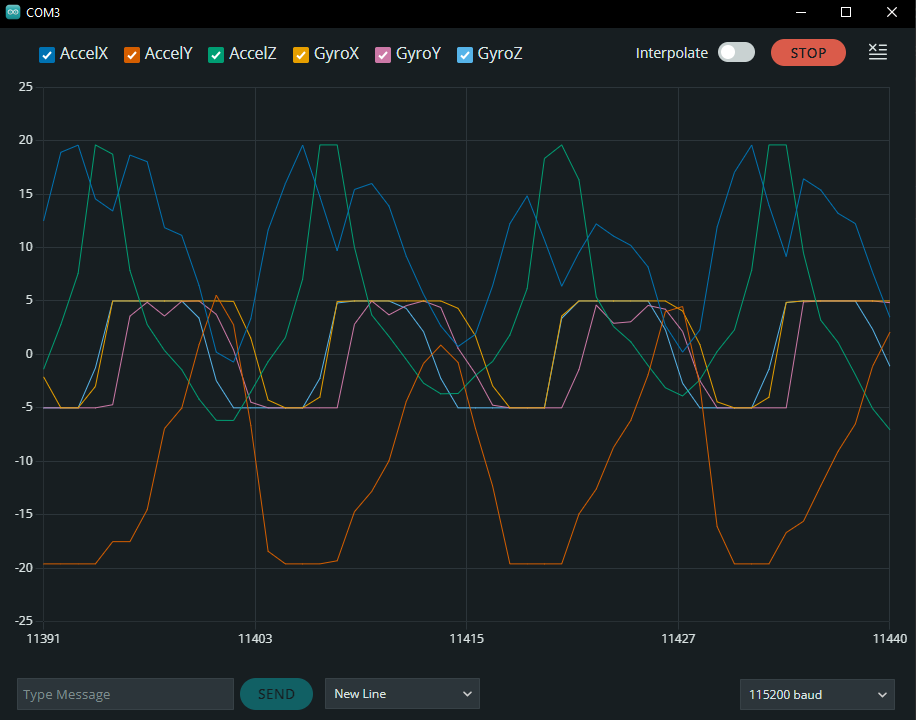
Brain Teaser: Can you guess what frequency I was spinning the device at in the image above? Click for the Answer!
If we are sampling every 25ms, and there are ~13 points per rotation (one sine wave), then we know that it is 25 × 13 = 325ms per cycle. Converting this to a frequency by inverting it, we get 1/0.325, or ~3Hz!
5. Extra Notes¶
LSM6DS IMU Orientation:
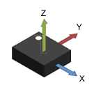
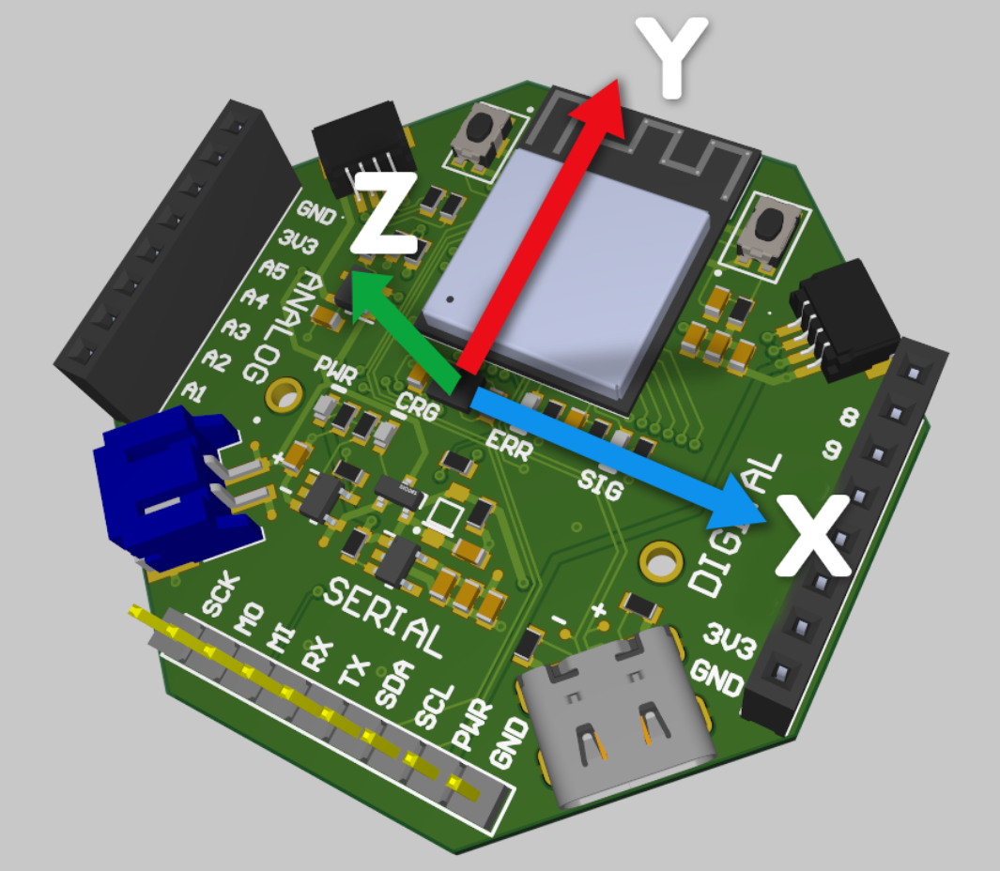
Learn more about improving our measurements via thresholding and Kalman filters in our IMU Deep Dive.
Nice job, now let's move on to the next tutorial!
Having trouble?
Send us an email at support@mr.industries or join our Discord for help!